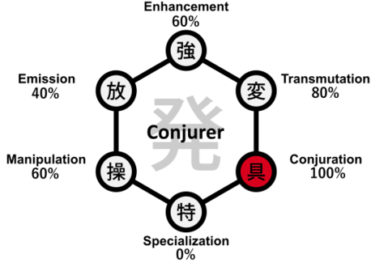

Hunter X Hunter
Conjurer Nen Type
Conjurers create objects from aura, often governed by strict rules and conditions that enhance power and specificity.

Key Characteristics of Conjurers
- Materializes aura into tangible objects or constructs.
- Power can scale with vows, restrictions, and conditions.
- Excels in strategic and rule-based ability design.
Video Overview
Enhancers rely on mental discipline to maintain and enhance their physical abilities, making them formidable opponents in direct confrontations.
Understanding Enhancer abilities is essential to grasp the fundamentals of Nen combat in Hunter x Hunter.